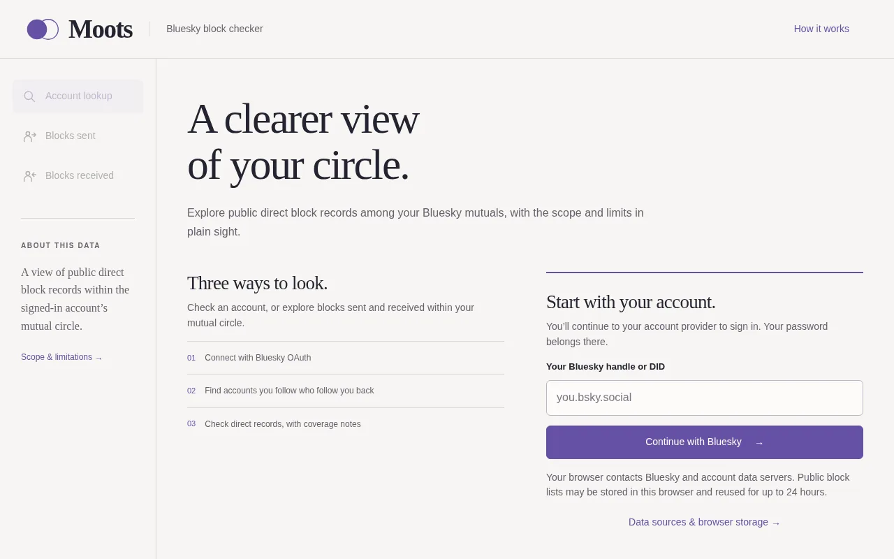
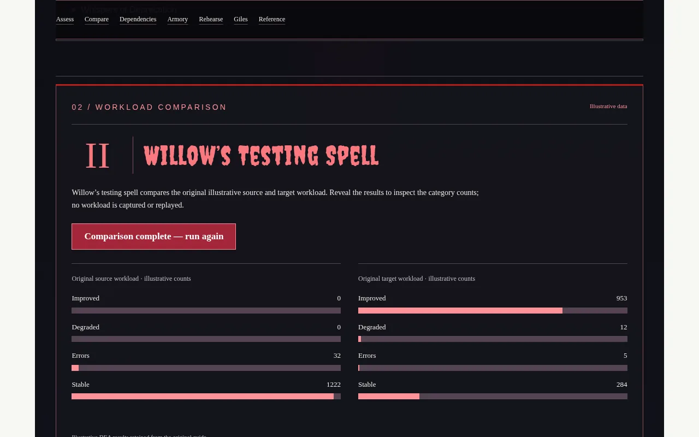
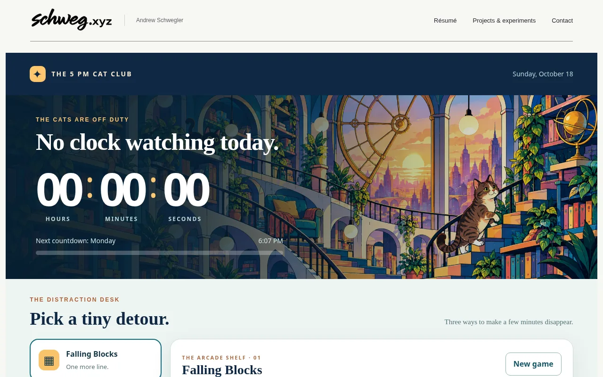

Projects &
experiments.
Useful tools, technical guides and things made out of curiosity. Start with three featured projects, then follow whatever catches your eye.
Jump to more projects
Client-side graph analysis
Bluesky Mutuals Block Checker
An AT Protocol tool for exploring mutual follows, auditing block relationships and exporting results. Analysis runs in the browser.
Explore project
SQL Server migration, explained
The Hellmouth Migration
A Buffy-inspired guide to assessment, workload comparisons, dependencies, security and a seven-step cutover rehearsal.
Explore project
A clock and a little controlled chaos
5 PM Cat Club
A device-local countdown, an illustrated library and three playable games: Falling Blocks, Snake and Sudoku.
Explore projectMore to explore.
Interactive stories, technical explorations and other corners of the web.
04Hollyoaks: the first 20 years
Character relationships, thematic charts and a filterable 25-event timeline.
Secure API calls with C# & SQL
A Starfleet console for exploring SQL CLR permission boundaries.
TNA: Cross the Line
Three years of wrestling stories, charts and roster cards.
Fading Spaces
An interactive data story about the loss of U.S. gay bars.
Trove
An inventory of physical media, books and archival projects.
tacobout.online
Videos, TV and movie reactions, culture and interesting links.
The person behind the projects